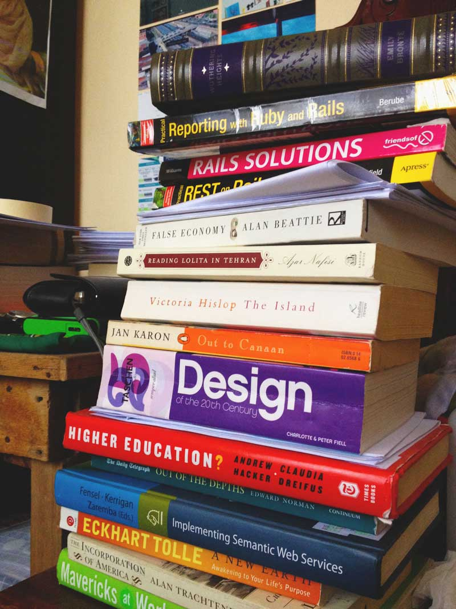

It was a fine day in college, eight years ago. I was browsing endless rows of books at the school library until I saw a book a small book, a memoir of a girl during the Second World War, The Diary of a Young Girl by Anne Frank. It was by reading that famous book that I started the journey to the love of reading, the love of learning. A story of a young girl who was just starting to find her place in the world, and then having to confront the harsh reality of life, that things cannot always be perfect; the grim violence of war, the hardship of having to have a very difficult situation just because you have a different belief from the majority. In spite of all these hardships, Anne Frank managed to keep her hopes, and to the end continued to believe in the nobility of the human spirit, that things would always be good in the future.

It is that simple beauty in hoping for something better, in doing what we can to continue aspiring to make ourselves better, so that we could contribute something to this world in the future. It is, I believe the central binding force that makes us humans, it is in this commonality of experience that we know we should keep on fighting for.
And so the days, lots of them passed by, turning into months, and years. I would graduate from college and get my degree, travel abroad, find a job, lose it, (a post for another day) but the constant in all these days is my unquenchable thirst for reading, for learning.
Oftentimes, all of the times, I would go to shopping malls just so I could spend hours at bookstores finding the next book I could devour, to escape reality even for a bit, experience different characters, different worlds.
Some of the memorable books I’ve read thus far include,
Atonement by Ian McEwan, a story of forgiveness, and of finding peace in one’s decisions. Homo Faber by Max Frisch, a book about questioning life’s meaning written with such beautiful characters. The Book Thief by Markus Zusak, another World War II book, in itself a story about the love of reading books, and that of survival. Such classics as 1984, Lord of the Flies, To kill a Mockingbird, The Catcher in the Rye, Frank McCourt’s memoirs Angela’s Ashes and ’Tis, and Lolita are also worth the mention.
But one book that would always have a space in my bookshelf would be another classic, Wuthering Heights by Emily Bronte, a story of such dark passion and love. I originally planned to read it once a year, but so far I’ve only managed to read twice, hoping I would get back to it in the near future.
If all else perished, and he remained, I should still continue to be; and if all else remained, and he were annihilated, the universe would turn to a mighty stranger.
-Emily Brontë, Wuthering Heights
At the end of all these revelations on books, a final begging question, how do I plan to use these books to help write my first code. I guess I would never have a straight answer to that. But I believe that in all these stories, both fiction and real, is an underlying motivation, a deep passion that feeds the creative soul, that when we assume others' perspectives, we are able to gain fresher ways to solve problems.
I hope in the future I would be a real good web developer and designer, because that is really something I’d love to be doing. But I know that I would always read books, and keep on learning new skills. It is that passion for learning itself that I know will help me succeed.
I hope others, like myself who are also just beginning to learn to code do not give up, and when we finally succeed, we might as well find the value in our work, and find their connections to all the ideas in all of the books ever written in the world.
What are your favourite books? Share your comments below.